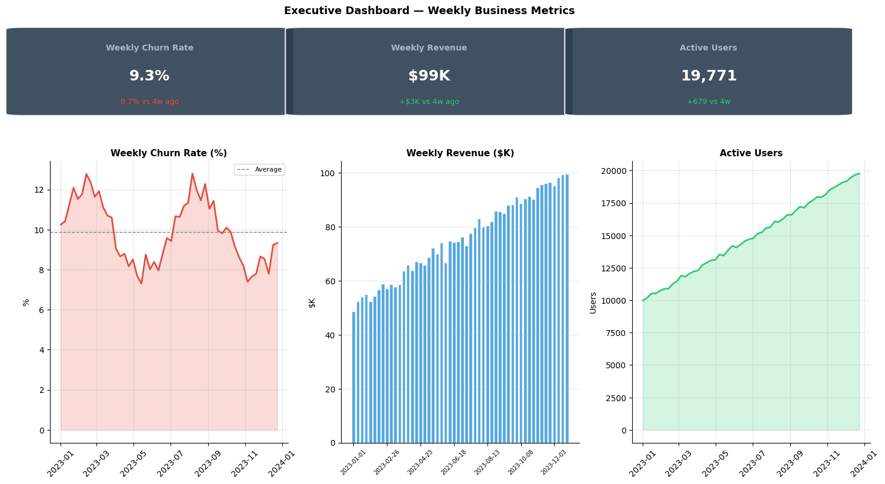
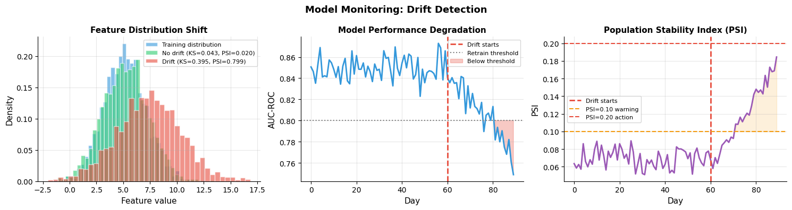

How do you deploy and monitor?#
Topics: Analytics Deployment · Batch vs Real-time · Dashboard Design · Data Drift · Concept Drift · PSI · Retraining Triggers · FastAPI Pattern
1. Analytics Deployment#
Dashboard design principles#
Lead with the most important metric — do not bury the headline
One page per audience — executives see summary, analysts see detail
Refresh cadence matches decision cadence — daily ops need daily data
Always include date of last update and data source
3-5 KPIs maximum per dashboard — too many metrics = no focus
Automated reports#
Schedule using Airflow, cron, or dbt
Alert on significant metric changes — e.g. churn rate up >10% week-over-week
Include confidence intervals — a single point estimate without uncertainty misleads
Self-serve analytics#
Document your data model — what does each table/column mean?
Create a data dictionary — definitions, owners, refresh cadence
Make queries reproducible — save SQL in version control
Gotchas#
Dashboards that nobody uses are waste — validate adoption before building
Stale dashboards are worse than no dashboards — they create false confidence
One-size-fits-all dashboard serves nobody — segment by audience
import pandas as pd
import numpy as np
import matplotlib.pyplot as plt
import matplotlib.patches as mpatches
import warnings
warnings.filterwarnings('ignore')
np.random.seed(42)
dates = pd.date_range('2023-01-01', periods=52, freq='W')
churn_rate = 0.10 + 0.02 * np.sin(np.arange(52) * 2 * np.pi / 26) + np.random.randn(52) * 0.005
revenue = 50000 + 1000 * np.arange(52) + np.random.randn(52) * 2000
active_users = 10000 + 200 * np.arange(52) - 50 * np.arange(52) ** 0.5 + np.random.randn(52) * 100
fig = plt.figure(figsize=(15, 8))
# KPI tiles
kpi_ax = fig.add_axes([0.02, 0.75, 0.96, 0.20])
kpi_ax.axis('off')
kpis = [
('Weekly Churn Rate', f'{churn_rate[-1]:.1%}', f'{(churn_rate[-1]-churn_rate[-5]):.1%} vs 4w ago', churn_rate[-1] < churn_rate[-5]),
('Weekly Revenue', f'${revenue[-1]/1000:.0f}K', f'+${(revenue[-1]-revenue[-5])/1000:.0f}K vs 4w ago', True),
('Active Users', f'{int(active_users[-1]):,}', f'{int(active_users[-1]-active_users[-5]):+,} vs 4w', True),
]
for i, (name, val, delta, positive) in enumerate(kpis):
x = 0.02 + i * 0.33
rect = mpatches.FancyBboxPatch((x, 0.05), 0.30, 0.90,
boxstyle='round,pad=0.02', facecolor='#2C3E50', edgecolor='white',
linewidth=1.5, alpha=0.9, transform=kpi_ax.transAxes)
kpi_ax.add_patch(rect)
kpi_ax.text(x + 0.15, 0.75, name, ha='center', va='center',
transform=kpi_ax.transAxes, fontsize=10, color='#AEB6BF', fontweight='bold')
kpi_ax.text(x + 0.15, 0.45, val, ha='center', va='center',
transform=kpi_ax.transAxes, fontsize=18, color='white', fontweight='bold')
delta_color = '#2ECC71' if positive else '#E74C3C'
kpi_ax.text(x + 0.15, 0.18, delta, ha='center', va='center',
transform=kpi_ax.transAxes, fontsize=9, color=delta_color)
ax1 = fig.add_axes([0.07, 0.06, 0.27, 0.60])
ax2 = fig.add_axes([0.40, 0.06, 0.27, 0.60])
ax3 = fig.add_axes([0.73, 0.06, 0.27, 0.60])
ax1.plot(dates, churn_rate * 100, color='#E74C3C', linewidth=2)
ax1.fill_between(dates, churn_rate * 100, alpha=0.2, color='#E74C3C')
ax1.axhline((churn_rate * 100).mean(), color='gray', linestyle='--', linewidth=1, label='Average')
ax1.set_title('Weekly Churn Rate (%)', fontsize=11, fontweight='bold')
ax1.set_ylabel('%'); ax1.legend(fontsize=8); ax1.grid(True, alpha=0.3)
ax1.tick_params(axis='x', rotation=45)
ax1.spines['top'].set_visible(False); ax1.spines['right'].set_visible(False)
ax2.bar(range(len(dates)), revenue / 1000, color='#3498DB', alpha=0.85, edgecolor='white')
ax2.set_title('Weekly Revenue ($K)', fontsize=11, fontweight='bold')
ax2.set_ylabel('$K'); ax2.grid(True, alpha=0.3, axis='y')
ax2.set_xticks(range(0, len(dates), 8))
ax2.set_xticklabels([str(d.date()) for d in dates[::8]], rotation=45, fontsize=7)
ax2.spines['top'].set_visible(False); ax2.spines['right'].set_visible(False)
ax3.plot(dates, active_users, color='#2ECC71', linewidth=2)
ax3.fill_between(dates, active_users, alpha=0.2, color='#2ECC71')
ax3.set_title('Active Users', fontsize=11, fontweight='bold')
ax3.set_ylabel('Users'); ax3.grid(True, alpha=0.3)
ax3.tick_params(axis='x', rotation=45)
ax3.spines['top'].set_visible(False); ax3.spines['right'].set_visible(False)
fig.suptitle('Executive Dashboard — Weekly Business Metrics', fontsize=13, fontweight='bold', y=0.99)
plt.savefig('dashboard_example.png', dpi=120, bbox_inches='tight')
plt.show()
print("Dashboard rendered successfully")

Dashboard rendered successfully
2. ML Deployment: Batch vs Real-time#
Batch inference#
Run predictions on a schedule (hourly, daily)
Results stored in a database — downstream systems read scores
Best for: churn prediction, recommendation pre-computation, risk scoring
Pro: simple infrastructure, no latency requirements, can use large models
Con: predictions can be stale between runs
Real-time (online) inference#
Model served via API — called on demand, responds in milliseconds
Best for: fraud detection, ad bidding, live personalization
Pro: uses most current data, enables real-time decisions
Con: complex infrastructure, strict latency requirements, harder to monitor
Near-real-time (streaming)#
Predictions computed as events arrive (e.g. Kafka consumer)
Middle ground — fresher than batch, simpler than real-time API
Model versioning and rollback#
Always version your models — tag with date, data version, and metric
Keep the previous version deployable — rollback within minutes if needed
Canary deployment: send 5% of traffic to new model before full rollout
FastAPI serving pattern#
# FastAPI model serving — reference pattern (not executed during build)
# Requires: pip install fastapi uvicorn
try:
import fastapi
print("FastAPI is available")
except ImportError:
pass
print("FastAPI serving pattern:")
print(" from fastapi import FastAPI")
print(" from pydantic import BaseModel")
print(" import numpy as np, joblib")
print("")
print(" app = FastAPI()")
print(" model = joblib.load('model.pkl')")
print("")
print(" class Request(BaseModel):")
print(" logins_30d: float")
print(" tenure_months: float")
print(" monthly_spend: float")
print("")
print(" @app.post('/predict')")
print(" def predict(req: Request):")
print(" X = [[req.logins_30d, req.tenure_months, req.monthly_spend]]")
print(" prob = model.predict_proba(X)[0, 1]")
print(" return {'churn_probability': round(float(prob), 4)}")
print("")
print(" # uvicorn serving:app --reload")
FastAPI is available
FastAPI serving pattern:
from fastapi import FastAPI
from pydantic import BaseModel
import numpy as np, joblib
app = FastAPI()
model = joblib.load('model.pkl')
class Request(BaseModel):
logins_30d: float
tenure_months: float
monthly_spend: float
@app.post('/predict')
def predict(req: Request):
X = [[req.logins_30d, req.tenure_months, req.monthly_spend]]
prob = model.predict_proba(X)[0, 1]
return {'churn_probability': round(float(prob), 4)}
# uvicorn serving:app --reload
3. Monitoring: Drift Detection#
Types of drift#
Type |
What changes |
Detection |
Impact |
|---|---|---|---|
Data drift |
Input feature distributions |
KS test, PSI |
Model receives unexpected inputs |
Concept drift |
Feature-target relationship |
Performance monitoring |
Predictions become wrong |
Prediction drift |
Output distribution |
Monitor score distribution |
Model behavior changes |
PSI (Population Stability Index)#
Standard industry metric for feature drift
PSI < 0.1 — stable, no action needed
PSI 0.1–0.2 — warning, investigate
PSI > 0.2 — significant shift, retrain
Retraining triggers#
Scheduled: retrain every N days regardless of performance
Performance-based: retrain when metric drops below threshold
Data-based: retrain when PSI exceeds threshold
Incident response#
Alert fires — performance or PSI threshold exceeded
Investigate — is it a data pipeline issue or real-world change?
If pipeline issue — fix upstream, redeploy
If real-world change — retrain with recent data, validate, deploy
Post-mortem — update monitoring thresholds if needed
Gotchas#
Not all drift requires retraining — understand why drift occurred first
Labels often lag — you may not know the model is wrong for days or weeks
Monitor upstream data pipelines too — drift can be a data engineering bug
A model that fails silently is worse than no model
import numpy as np
import matplotlib.pyplot as plt
from scipy import stats
import warnings
warnings.filterwarnings('ignore')
np.random.seed(42)
n = 2000
# Simulate feature before and after drift
feature_train = np.random.normal(loc=5.0, scale=2.0, size=n)
feature_no_drift = np.random.normal(loc=5.2, scale=2.1, size=n)
feature_drift = np.random.normal(loc=7.5, scale=3.0, size=n)
def compute_psi(expected, actual, n_bins=10):
bins = np.percentile(expected, np.linspace(0, 100, n_bins + 1))
bins[0] -= 1e-6; bins[-1] += 1e-6
exp_pct = np.histogram(expected, bins=bins)[0] / len(expected)
act_pct = np.histogram(actual, bins=bins)[0] / len(actual)
exp_pct = np.where(exp_pct == 0, 1e-4, exp_pct)
act_pct = np.where(act_pct == 0, 1e-4, act_pct)
return float(np.sum((act_pct - exp_pct) * np.log(act_pct / exp_pct)))
ks_no, p_no = stats.ks_2samp(feature_train, feature_no_drift)
ks_yes, p_yes = stats.ks_2samp(feature_train, feature_drift)
psi_no = compute_psi(feature_train, feature_no_drift)
psi_yes = compute_psi(feature_train, feature_drift)
# Simulated PSI and AUC over time
days = np.arange(90)
drift_day = 60
psi_over_time = np.where(
days < drift_day,
0.05 + np.random.rand(90) * 0.04,
0.05 + 0.004 * (days - drift_day) + np.random.rand(90) * 0.02
)
auc_over_time = np.where(
days < drift_day,
np.clip(0.85 + np.random.randn(90) * 0.01, 0.75, 0.95),
np.clip(0.85 - 0.003 * (days - drift_day) + np.random.randn(90) * 0.01, 0.5, 0.95)
)
fig, axes = plt.subplots(1, 3, figsize=(15, 4))
# Feature distribution before/after drift
axes[0].hist(feature_train, bins=40, alpha=0.6, color='#3498DB',
edgecolor='white', density=True, label='Training distribution')
axes[0].hist(feature_no_drift, bins=40, alpha=0.6, color='#2ECC71',
edgecolor='white', density=True,
label=f'No drift (KS={ks_no:.3f}, PSI={psi_no:.3f})')
axes[0].hist(feature_drift, bins=40, alpha=0.6, color='#E74C3C',
edgecolor='white', density=True,
label=f'Drift (KS={ks_yes:.3f}, PSI={psi_yes:.3f})')
axes[0].set_xlabel('Feature value', fontsize=11)
axes[0].set_ylabel('Density', fontsize=11)
axes[0].set_title('Feature Distribution Shift', fontsize=11, fontweight='bold')
axes[0].legend(fontsize=8)
axes[0].grid(True, alpha=0.3)
axes[0].spines['top'].set_visible(False); axes[0].spines['right'].set_visible(False)
# AUC over time
axes[1].plot(days, auc_over_time, color='#3498DB', linewidth=2)
axes[1].axvline(drift_day, color='#E74C3C', linewidth=2, linestyle='--', label='Drift starts')
axes[1].axhline(0.80, color='gray', linewidth=1.5, linestyle=':', label='Retrain threshold')
axes[1].fill_between(days[drift_day:], auc_over_time[drift_day:], 0.80,
where=auc_over_time[drift_day:] < 0.80,
alpha=0.3, color='#E74C3C', label='Below threshold')
axes[1].set_xlabel('Day', fontsize=11)
axes[1].set_ylabel('AUC-ROC', fontsize=11)
axes[1].set_title('Model Performance Degradation', fontsize=11, fontweight='bold')
axes[1].legend(fontsize=8)
axes[1].grid(True, alpha=0.3)
axes[1].spines['top'].set_visible(False); axes[1].spines['right'].set_visible(False)
# PSI over time
axes[2].plot(days, psi_over_time, color='#9B59B6', linewidth=2)
axes[2].axvline(drift_day, color='#E74C3C', linewidth=2, linestyle='--', label='Drift starts')
axes[2].axhline(0.10, color='#F39C12', linewidth=1.5, linestyle='--', label='PSI=0.10 warning')
axes[2].axhline(0.20, color='#E74C3C', linewidth=1.5, linestyle='--', label='PSI=0.20 action')
axes[2].fill_between(days, psi_over_time, 0.10,
where=psi_over_time > 0.10, alpha=0.15, color='#F39C12')
axes[2].fill_between(days, psi_over_time, 0.20,
where=psi_over_time > 0.20, alpha=0.20, color='#E74C3C')
axes[2].set_xlabel('Day', fontsize=11)
axes[2].set_ylabel('PSI', fontsize=11)
axes[2].set_title('Population Stability Index (PSI)', fontsize=11, fontweight='bold')
axes[2].legend(fontsize=8)
axes[2].grid(True, alpha=0.3)
axes[2].spines['top'].set_visible(False); axes[2].spines['right'].set_visible(False)
plt.suptitle('Model Monitoring: Drift Detection', fontsize=13, fontweight='bold')
plt.tight_layout()
plt.savefig('drift_monitoring.png', dpi=120, bbox_inches='tight')
plt.show()
print(f"No drift — KS={ks_no:.3f} (p={p_no:.3f}), PSI={psi_no:.3f} -> Stable")
print(f"Drift — KS={ks_yes:.3f} (p={p_yes:.3f}), PSI={psi_yes:.3f} -> Action required")
print("PSI guide: <0.10 stable | 0.10-0.20 warning | >0.20 retrain")

No drift — KS=0.043 (p=0.050), PSI=0.020 -> Stable
Drift — KS=0.395 (p=0.000), PSI=0.799 -> Action required
PSI guide: <0.10 stable | 0.10-0.20 warning | >0.20 retrain